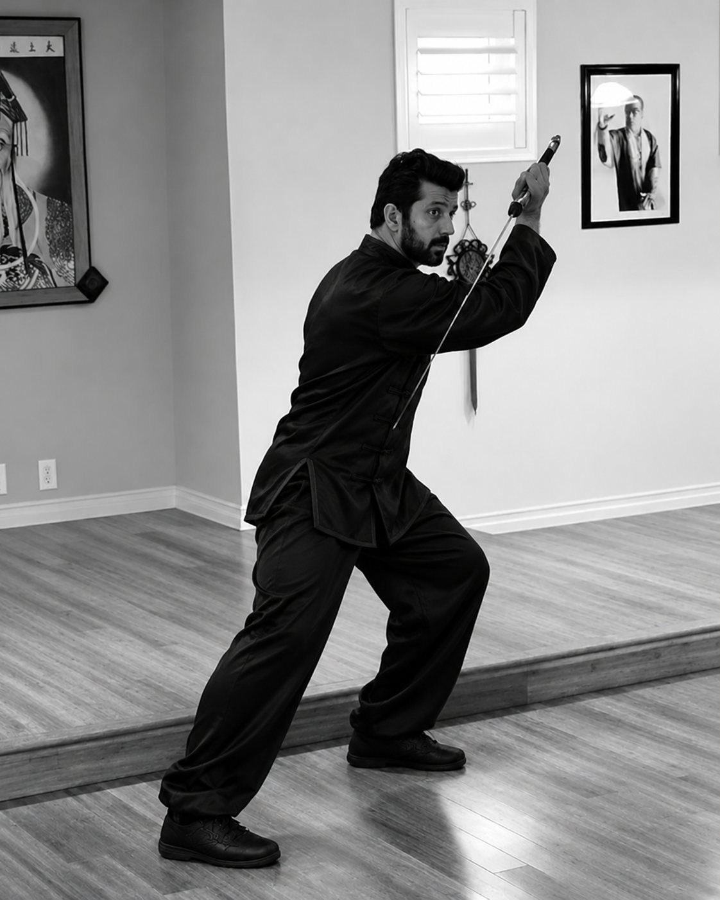
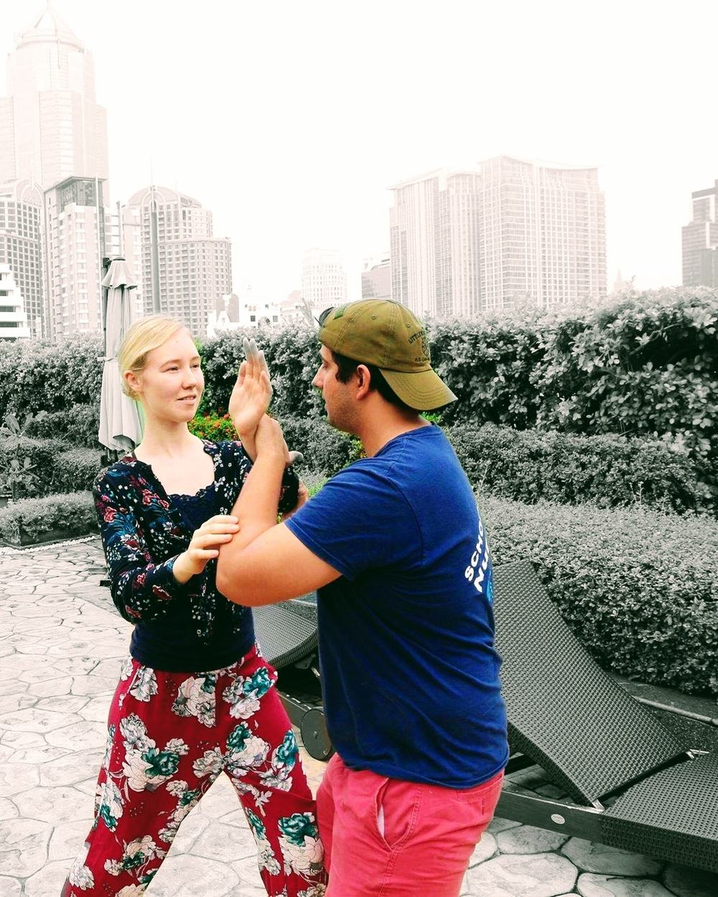
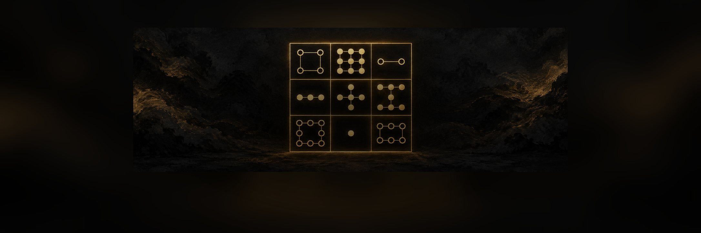

Занятия
На практике




Южная Калифорния · Внутреннее кунг-фу
У Дао · Даосский путь
Древние внутренние искусства, укоренённые в даосской мудрости, — воспитание ума, тела и духа с 2698 года до н. э.
Наша линия
Сяо Цзю Тянь — древнейшая из известных даосских систем, восходящая к 2698 году до н. э. Это не просто боевые искусства: это целостные системы самосовершенствования, исцеления и внутреннего преображения, переданные через непрерывную линию мастеров.
В Южной Калифорнии мы продолжаем эту традицию. Группы небольшие, обучение — личное, а глубина того, что доступно преданному ученику, не имеет равных в современном мире.
Узнать о занятияхПрограмма обучения
Каждая система — целый мир: полный путь обучения, связывающий движение, дыхание, намерение и дух.
01
Древнейшая известная сегодня даосская система, датируемая 2698 годом до н. э. Три опоры: кулачное искусство, работа с мечом и промывание костного мозга. Передаётся лишь лично избранным ученикам продвинутого уровня.
02
Древнее искусство боя и исцеления. Пять первоэлементов, двенадцать животных, тянь-гань, шесть гармоний, девять сущностей. Обманчиво простое и бесконечно глубокое: легко выучить, труднее всего освоить.
03
Старинная форма из 13 позиций и 64 движений. Энергия наматывания шёлковой нити обходит меридианы тела, порождая необычайную силу через точное спиральное движение и медитацию в движении.
04
Практичное уличное искусство начала XVIII века, без излишеств. Быстрая работа ног, низкие удары ногами, взрывные удары руками. Одиночные и парные боевые формы, созданные для реального применения.
05
Развитие рук, обладающих железной силой при совершенно обычном виде. Уходит корнями в шаолиньские монастыри. Сопоставимой подготовки Железной ладони нет более нигде в мире.
06
Восемь триграмм. Непрерывное кружение, непрерывное изменение. Восемь животных, десять упражнений, три способа хождения. Высшая цель — двигаться, действовать и отвечать с полной естественной свободой.
07
Классические искусства спальных покоев. Сбережение цзин, превращение её в ци и обращение по телу — сексуальная энергия как предмет взращивания, а не расходования.
08
Сидячие и стоячие формы. Выстроенный путь к внутренней тишине, подъёму ци и высшим состояниям осознанности — основание под всеми внешними искусствами.
09
Промывание костного мозга — продвинутое нэй-гун системы Сяо Цзю Тянь. Дыхание, укрепление и обращение энергии ради жизненной силы и долголетия. Доступно любому преданному делу взрослому.
10
Кулак Врат Иероглифов. Редкая мягкая шаолиньская система: восемнадцать иероглифов, заключённых в трёх формах. Лёгкая, быстрая, с ударами кончиками пальцев — сохранена мастером Чэнь Чэнъянем.
11
Дыхание и циркуляция энергии для здоровья, а также целительские искусства: туйна, акупрессура и прижигание (моксотерапия). Доступно в любом возрасте и при любой физической форме, боевой опыт не нужен.
«Высшая добродетель подобна воде: она приносит пользу всему сущему и не борется».— «Дао дэ цзин» · Лао-цзы
Мастера
Эти искусства передавались по живой цепи мастеров. Учиться у нас — значит прикоснуться к этой цепи.
Занятия


Вопросы
В Санти, Калифорния, округ Сан-Диего. Занятия частные и только по записи. Вы не рядом с Сан-Диего? Сифу Аджай Кумра также ездит по всему миру и проводит частные уроки там, где находитесь вы. Воспользуйтесь формой ниже, чтобы связаться и договориться о времени.
Публичного расписания нет. Занятия частные и только по записи, индивидуально или в небольших группах, в согласованное с Сифу Аджаем Кумрой время.
Да. Ваше первое занятие — бесплатное вводное.
Внутренним искусствам традиции Little Nine Heaven, в том числе Син-И (Синъицюань), Ба Гуа (Багуачжан), тайцзи стиля Чэнь, цигуну, даосской медитации, Цзы Мэнь Цюань и тренировке «железной руки».
Да. Тайцзи стиля Чэнь преподаётся и как боевое искусство, и как оздоровительная практика, не разделяя их. Те, кто приходит ради здоровья, ничего не теряют: механика, делающая искусство эффективным, делает его и полезным для тела.
Да. Ши Шуй преподаётся только индивидуально, лично и поэтапно. Его можно изучать как самостоятельную практику любому целеустремлённому взрослому, мужчине или женщине, без опыта в боевых искусствах, и совмещать с другим боевым искусством, спортом или йогой.
Сифу Аджай Кумра, ученик Мастера Джеймса Макнила из линии Little Nine Heaven.
Санти, Калифорния
Обучение внутренним искусствам ведётся в личном порядке. Если вы готовы всерьёз посвятить себя изучению этих редких и мощных систем, напишите нам. Дверь открыта для ищущего.
Индивидуальные занятия в Санти, Калифорния (округ Сан-Диего), только по предварительной записи. Первое занятие — бесплатное вводное.
Удобнее по электронной почте? Пишите на info@l9hkungfu.com
Little Nine Heaven SoCal · Южная Калифорния